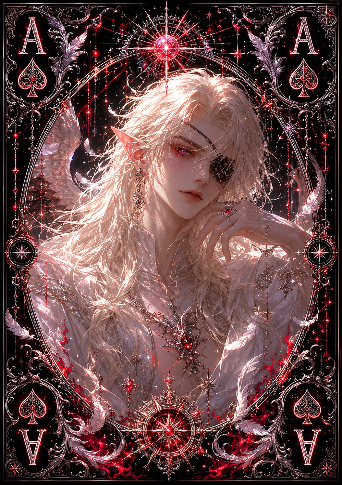

| Race | High Elf |
| Gender | Male |
| Age | 312 Years |
| Nation | Eliondra |
| Weapon | Royal Elven Rapier |
| Magic | Arcane Light Magic |
Elarion is the first heir to the throne and current ruler of Eliondra, governing the nation with a strong sense of justice and compassion. Under his leadership, Eliondra has become one of the safest and most prosperous territories in Eryndor, renowned for the extraordinary abundance of vegetation and valuable minerals found throughout its lands.
Unlike rulers who maintain authority through fear, Elarion believes stability is achieved through loyalty, knowledge, and the well-being of his people. Intelligent and attentive, he carefully considers the consequences of his decisions and has earned considerable respect for treating his subjects fairly regardless of their position.
Although Elarion is not known for aggression, he is far from defenseless. He possesses considerable skill with Arcane Light Magic and carries a Royal Elven Rapier when necessary. His relatively low reputation for danger reflects his peaceful nature rather than weakness; he simply prefers diplomacy and strategy before resorting to violence.
Eliondra is widely regarded as a nation of knowledge and growth, values that Elarion actively protects. As the first heir to its throne, he carries both the responsibility of preserving what previous generations built and the expectation of guiding the kingdom toward an even more prosperous future.